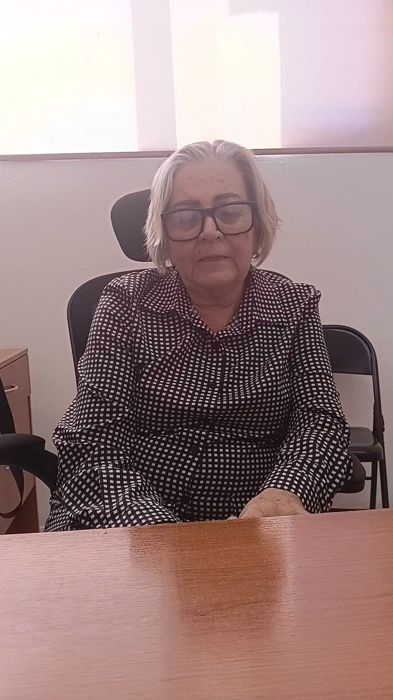
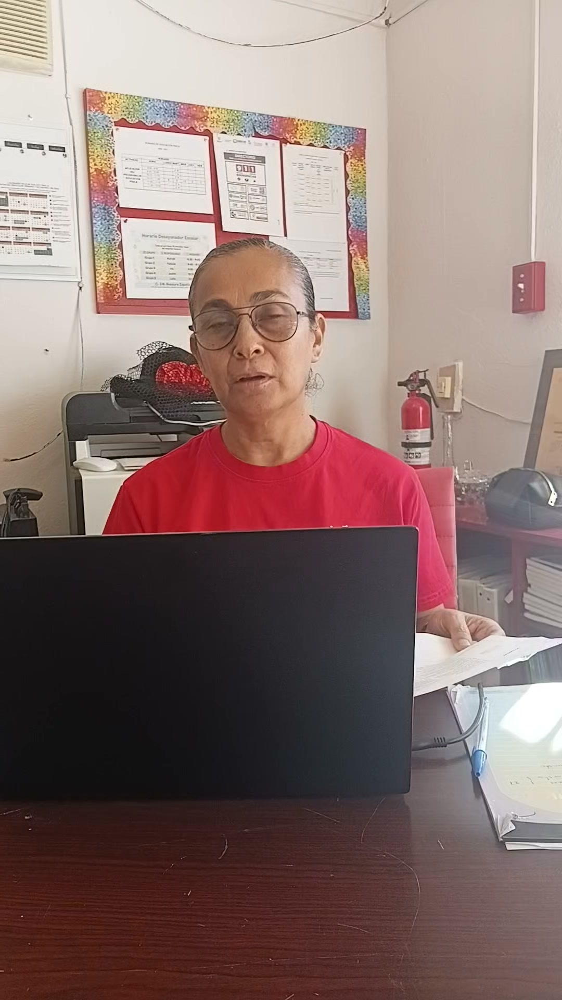
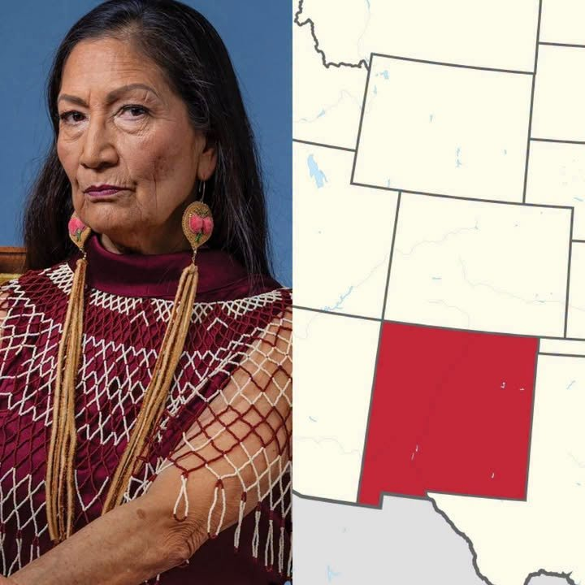

Local
La profesora Silvia Fernández Leyva, directora del Instituto Ojinaguense de la Mujer, informó que se llevarán a cabo pláticas sobre erradicación de la violencia contra la mujer. Mira el video completo en Facebook.

Local
La profesora Esperanza Dávila Chacón, directora del Jardín de Niños Rosaura Zapata, informó que se implementan protocolos de seguridad en la entrada al plantel. Mira el video completo en Facebook.
Local
El Dr. Jassiel Hernández López, jefe de los Servicios de Salud Distrito Ojinaga, informó que las vacunas se aplican de manera gratuita y que el abastecimiento de medicinas en el centro de salud está en 65%. Mira el video completo en Facebook.
Local
Los aseadores de calzado de la plaza principal de Ojinaga pasan por una mala racha: hay días en que no atienden a nadie. Ángel, con 20 años en el oficio, cuenta que en un buen día gana entre 100 y 150 pesos. La falta de turistas ha dejado sin movimiento a los negocios del centro, y a eso se suma que hoy mucha gente limpia sus zapatos en casa.
Frontera
Los vehículos mexicanos que ingresen a Texas podrían necesitar un engomado ecológico, informó César Díaz, director de Ecología de Ciudad Juárez. La medida aún no entra en vigor, ya que falta la firma de las autoridades ambientales federales de México, y podría aplicarse a partir del próximo año. Habrá una reunión en Santa Teresa, Nuevo México, con la EPA, la TCEQ de Texas y El Paso Air Quality. Todavía no se sabe si aplicaría también en el cruce Ojinaga-Presidio.
Estatal
El coordinador estatal de la Defensa de la Transformación en Chihuahua, Cruz Pérez Cuéllar, admitió que existe distanciamiento con la senadora Andrea Chávez tras una contienda interna que calificó como "tan reñida y tan intensa". En entrevista señaló que "la unidad no se construye de la noche a la mañana" y aseguró: "Yo pondré todo de mi parte". Sobre Chávez, nombrada coordinadora en Juárez, dijo que "va a ir ayudando".
Estatal
Cruz Pérez Cuéllar, coordinador estatal de la Defensa de la Transformación en Chihuahua, consideró contradictorio que PAN y PRI vuelvan a buscar una alianza rumbo a 2027 después de haberla descartado. Según Pérez Cuéllar, Morena no depende de lo que hagan sus adversarios y sigue sumando a liderazgos de todo el estado, incluso de personas que antes no simpatizaban con la Cuarta Transformación.
Estatal
La gobernadora Maru Campos invitó a las personas sin seguridad social, y a sus familias, a afiliarse a MediChihuahua. Con el programa reciben consultas, tratamientos y medicamentos sin costo. Para afiliarse, hay que acudir al módulo más cercano con los documentos que se piden; la información está en medichihuahua.mx.
Nacional
NBC, CNN y The New York Times proyectan que el Partido Demócrata ganó la mayoría en la Cámara de Representantes. Varios medios reportan que también se quedaría con el Senado. El Congreso tiene peso en temas como aranceles, comercio y migración. El martes, la presidenta Claudia Sheinbaum dijo que México respetará el resultado y que la relación con Estados Unidos seguirá igual. El T-MEC sigue vigente, pero tendrá revisiones cada año.
Frontera
El demócrata James Talarico derrotó al republicano Ken Paxton en la elección para el Senado de Estados Unidos por Texas. Es la primera victoria demócrata en una elección estatal de Texas en más de 30 años. Talarico, de 37 años, será el primer senador demócrata del estado desde 1993 y el más joven del Senado. Ocupará el escaño de John Cornyn.
Frontera
Según los resultados no oficiales del martes 3 de noviembre, José “Joe” Portillo Jr. se reelige como juez del Condado de Presidio. También ganan Carolina A. Cataño (secretaria de distrito y del condado), Florcita Zubia (tesorera), Jesús “Junie” Herrera (comisionado del precinto 2), Obed Escontrías (comisionado del precinto 3) y Dina Jo Márquez (juez de paz del precinto 1). Todavía no hay ganador en el precinto 4 de comisionados ni en el juzgado de paz del precinto 2.
Frontera
El documental “Viva Presidio!”, dirigido por Andrea Lazzari y producido por WAAMOZ en 2019, ofrece una mirada a la historia, identidad y riqueza cultural de Presidio, Texas. La producción cinematográfica se encuentra disponible en el sitio oficial de sus creadores y fue presentada también en el programa “Strata, Portraits of Humanity”, de The Archaeology Channel. El proyecto contó con la colaboración de Álvaro Cecchetti, encargado del cartel; Oscar Mapelli, responsable de la mezcla de audio, y el alcalde de Presidio, John Ferguson. La distribución está a cargo de Premiere Film. “Viva Presidio!” representa una ventana para conocer y preservar la historia de una comunidad fronteriza que mantiene viva su identidad y sus raíces.
Local
La Tesorería Municipal de Ojinaga arrancó el programa “Buen Fin para tu Patrimonio 2026”: del 3 de noviembre al 31 de diciembre se descuenta el 100% de multas y recargos del impuesto predial. Aplica para casas habitación y lotes, bardeados o no. La presidenta municipal Lucy Marrufo invitó a los propietarios a ponerse al corriente para empezar 2027 sin adeudos.
Nacional
El Instituto Nacional Electoral (INE) anunció que presentará una denuncia ante la Fiscalía General de la República (FGR) contra su exdirigente, Guadalupe Taddei, y posibles integrantes de su círculo cercano, por presuntos actos de corrupción. La presidenta provisional del organismo, Blanca Cruz García, informó que las diez consejerías acordaron instruir a sus equipos jurídicos para integrar la denuncia y entregar a la Fiscalía la información necesaria para deslindar responsabilidades. Entre las posibles conductas señaladas por opositores se encuentran ejercicio abusivo de funciones, cohecho, peculado, operaciones con recursos de procedencia ilícita y asociación delictuosa. Estas acusaciones deberán ser investigadas y, en su caso, acreditadas por las autoridades correspondientes. Además, el Consejo General aprobó solicitar a la Auditoría Superior de la Federación (ASF) un ejercicio emergente de fiscalización para revisar la adquisición de servicios y posibles irregularidades administrativas. La nueva administración también prepara medidas de carácter administrativo, luego de que al menos 30 funcionarios presentaran su renuncia tras la salida de Taddei. El caso abre un nuevo capítulo de revisión interna en el organismo electoral, cuya credibilidad depende de la transparencia, la rendición de cuentas y el esclarecimiento de cualquier posible irregularidad.
Nacional
El demócrata Xavier Becerra, hijo de migrantes mexicanos, ganó la elección para gobernador de California al derrotar al republicano Steve Hilton, candidato respaldado por Donald Trump. Becerra se convertirá en el primer gobernador de origen hispano de California desde 1875, encabezando el gobierno del estado más poblado de Estados Unidos. Durante su mensaje de victoria en Sacramento, acompañado de su familia y simpatizantes, expresó: “Qué gran noche para ser californiano, qué gran noche para ser americano, para ser hijo de inmigrantes”. La presidenta de México, Claudia Sheinbaum, había expresado previamente su reconocimiento ante la posibilidad de su triunfo, destacando la importancia de la representación de los millones de personas de origen mexicano que viven en Estados Unidos. Su victoria representa un acontecimiento histórico para la comunidad latina y los mexicanos que han construido su vida al otro lado de la frontera.
Nacional
El presidente de Estados Unidos, Donald Trump, advirtió que utilizará su facultad de veto para bloquear las iniciativas legislativas que impulsen los demócratas, quienes se preparan para asumir el control del Congreso tras las elecciones intermedias. Incluso, el mandatario apareció públicamente con una gorra roja con la palabra “VETO” y aseguró que rechazará las propuestas de la oposición que considere inaceptables. En declaraciones a Fox News, Trump calificó de “locuras” las futuras iniciativas demócratas y sostuvo que recurrirá al veto para obligar a sus adversarios políticos a negociar.

Nacional
La demócrata Deb Haaland ganó la elección para gobernadora de Nuevo México, derrotando al republicano Greggory Hull. Con este triunfo, se convierte en la primera mujer indígena elegida gobernadora de un estado en la historia de Estados Unidos, marcando un acontecimiento histórico para la representación de los pueblos originarios en la política estadounidense.
Frontera
Presidio, Texas.– La victoria de la demócrata Gina Hinojosa sobre el gobernador republicano Greg Abbott representa un cambio histórico en la política de Texas y abre nuevas expectativas para las comunidades fronterizas, entre ellas Presidio. Hinojosa se convertirá en la primera mujer latina en ocupar la gubernatura de Texas y en la primera demócrata en llegar al cargo desde 1994, cuando gobernaba Ann Richards. Su triunfo genera expectativas en la región fronteriza, particularmente en temas como desarrollo económico, comercio internacional, infraestructura, educación y políticas migratorias. Para Presidio, cuya actividad económica y social mantiene una estrecha relación con México, especialmente con Ojinaga, será importante conocer las prioridades de la nueva administración y su disposición para atender las necesidades de las comunidades fronterizas. La relación entre Texas y Chihuahua, el fortalecimiento de los cruces internacionales y las oportunidades de desarrollo regional serán algunos de los temas de interés para esta zona. Con este resultado, Texas inicia una nueva etapa política. Ahora, la expectativa estará puesta en que el cambio de gobierno también represente oportunidades y beneficios para quienes viven en la frontera.
Local
La ciudadanía sigue preocupada por los robos constantes en Ojinaga, y la pregunta es inevitable: ¿dónde está Seguridad Pública y qué estrategia se aplica para frenar esta situación? No basta con atender los reportes cuando el delito ya ocurrió. Hacen falta patrullajes, vigilancia en las colonias, operativos preventivos y acciones concretas. ¿Hasta cuándo veremos cambios? Ojinaga necesita una estrategia de seguridad que se note y que dé resultados, no solo reacciones después de cada robo. Mira el video completo en Facebook.
Nacional
El demócrata Chris Pappas, que ganó el escaño de New Hampshire en el Senado de Estados Unidos, será el primer hombre abiertamente gay elegido senador en la historia del país. Pappas, que hasta ahora era representante federal, derrotó al exsenador republicano John E. Sununu, según proyecciones de CNN. Ocupará el lugar de la senadora demócrata Jeanne Shaheen, que se retira. En su campaña se enfocó en el costo de la vida y el acceso a la salud.
Nacional
El republicano Byron Donalds ganó la gubernatura de Florida frente al demócrata David Jolly, según proyecciones de Associated Press, NBC News y Fox News. Con el 98% de los votos contados, Donalds aventajaba por 1.3 puntos porcentuales. Donalds, que tuvo el respaldo de Donald Trump y del gobernador Ron DeSantis, será el primer gobernador negro en la historia de Florida. Sucederá a DeSantis, que ya no podía reelegirse. Jolly es excongresista republicano y en esta elección compitió como demócrata.
Nacional
Dos candidatos demócratas de origen latino podrían hacer historia en las elecciones de Estados Unidos. En California, Xavier Becerra llegó a la jornada como favorito en las encuestas frente al republicano Steve Hilton. Si gana, sería el primer gobernador latino del estado desde Romualdo Pacheco, en 1875. En Texas, Gina Hinojosa aparece adelante del gobernador republicano Greg Abbott en los primeros resultados, que todavía no incluyen la mayoría de los votos emitidos el día de la elección, según The Texas Tribune. Si se confirma, sería la primera persona con raíces hispanas en gobernar Texas desde que el estado se unió a Estados Unidos, y la primera demócrata desde Ann Richards en los años noventa. Ninguna de las dos contiendas se ha definido todavía.
Estatal
El Congreso del Estado aprobó una reforma al artículo 63 de la Ley de Transporte de Chihuahua. Con ella, las multas por exceso de peso, dimensiones o capacidad en vehículos de carga ya no serán solo para el chofer. También serán responsables las empresas transportistas, los dueños de los vehículos, quienes contraten el servicio y los dueños de las instalaciones donde se cargue de más. La sanción aplicará cuando una unidad exceda por más de una tonelada el peso permitido. La iniciativa fue del Grupo Parlamentario del PAN y la presentó en el pleno la diputada Joceline Vega Vargas. Según el dictamen, la reforma busca prevenir accidentes y evitar el deterioro de carreteras y puentes.
Nacional
La consejera presidenta provisional del INE, Blanca Cruz, anunció que el instituto presentará una denuncia ante la Fiscalía General de la República contra quien resulte responsable de presuntas anomalías en la contratación de proveedores. Según explicó, la denuncia no llevará una lista de nombres. Podría alcanzar a la expresidenta Guadalupe Taddei, a ex secretarios ejecutivos y a funcionarios de distintos niveles. Las diez consejerías acordaron presentarla esta semana, y el jueves el Consejo General votará medidas para facilitar la investigación de la Auditoría Superior de la Federación y resguardar documentos. Hasta ahora, Taddei no se ha pronunciado sobre la denuncia.
Estatal
El Instituto Estatal Electoral (IEE) de Chihuahua confirmó que celebró tres contratos con Cajas Graf y Formas Finas y Materiales, dos empresas que investiga la Auditoría Superior de la Federación. En total suman más de 38 millones de pesos. Ambas empresas pertenecen al mismo empresario, señalado por sus vínculos con la expresidenta del INE Guadalupe Taddei. El titular del IEE, Jesús Armendáriz, aseguró que las compras se hicieron mediante licitaciones públicas. Los contratos corresponden al proceso electoral de 2021, cuando el instituto era encabezado por Claudia Arlett Espino. Según una observación de la ASF, en algunos de estos contratos hubo comprobantes de pago, pero no suficientes pruebas de lo que se entregó.
Nacional
Los primeros resultados y los sondeos de las elecciones intermedias en Estados Unidos favorecen al Partido Demócrata. En New Hampshire, el demócrata Chris Pappas ganó el escaño al Senado frente al exsenador republicano John E. Sununu, según proyecciones de CNN y Decision Desk HQ. De acuerdo con los primeros reportes, los senadores demócratas Jon Ossoff (Georgia) y Mark Warner (Virginia) también conseguirían la reelección. En Texas sigue el conteo en las contiendas por el Senado, entre James Talarico y Ken Paxton, y por la gubernatura, entre Greg Abbott y Gina Hinojosa.
Nacional
Integrantes del movimiento "Libertad para César Jáuregui" (Roberto Lara, Juan Blanco y René Sotelo) acudieron al Comité Ejecutivo Nacional del PAN, en la Ciudad de México. Ahí entregaron a Santiago Taboada, secretario de Acción Política del partido, una carta escrita a mano por el exfiscal de Chihuahua desde el penal del Altiplano. En ella, Jáuregui pide a la dirigencia nacional y a los legisladores federales del PAN que se pronuncien sobre su caso y que pueda enfrentar su proceso en libertad. Jáuregui está vinculado a proceso por traición a la patria en una investigación de la FGR. Según el movimiento, Taboada se comprometió a impulsar una estrategia nacional de apoyo.